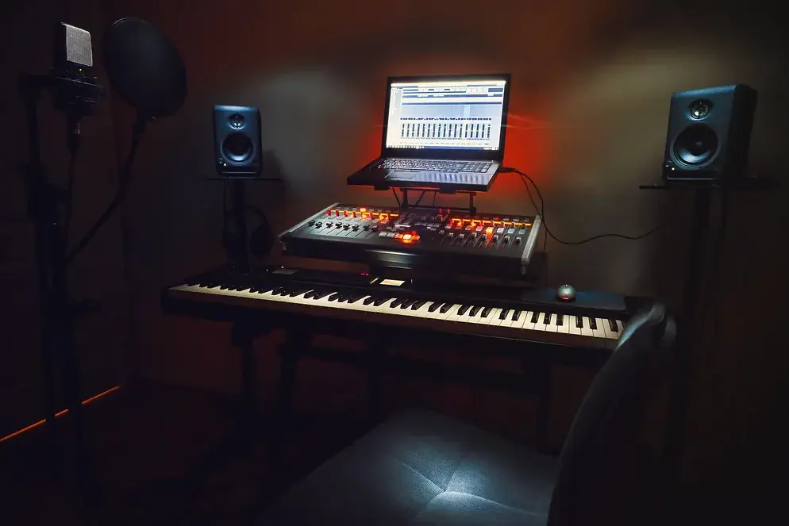
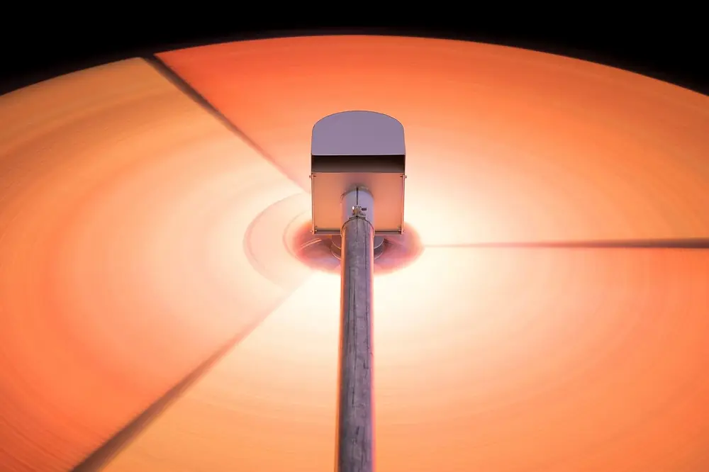

CH 01
Per-track mixing from your stems
Send the stems as WAV 24-bit, every file starting at the same point so they line up. We balance, bus, compress and EQ until the song reads on earbuds and on big speakers, then print a mixdown for your notes.
Indie Block Records mixes and masters songs for independent musicians, priced per track. You upload the parts, we send a mix back for notes, and you leave with masters that hold up on a phone speaker and a club system alike.
Each strip below is one job we take on. Book them one at a time or chain them: most artists send stems for a mix, then let the same ears master it. Nothing here is a package you have to buy whole.
Send the stems as WAV 24-bit, every file starting at the same point so they line up. We balance, bus, compress and EQ until the song reads on earbuds and on big speakers, then print a mixdown for your notes.
A master shaped for the way streaming players measure loudness in LUFS, with true peak held under the ceiling so the encode stays clean. You get a WAV 24-bit master and a 16-bit copy.
A separate master for the lacquer: softer top end, a centered low end, no brick-wall limiting, each side sequenced with its gaps. Priced per side, because a side is what the cutting room receives.
Once the main mix is approved we print the same balance with the vocal muted, or with flagged words cut cleanly. Each extra version is its own file and its own small line on the invoice.
Every mix includes two rounds of written notes. Timestamped comments work best: a vocal a touch hot at the second chorus gets an exact change; a request for more energy gets a question back.
Prices in US dollars. The booking page adds them up as you choose, and the email that follows confirms the same total before anything is paid.

No distribution or streaming uploads: we hand you files, you choose where they go. No promotion or playlist pitching. No royalty handling of any kind. No session musicians: we mix what you recorded and do not add players to it.
A session here is a booked block of mixing or mastering on your songs. There is no tracking room and nobody has to fly in; the work travels by upload and by email, and it runs the same way for a bedroom demo or a full band record.
What we value is plain talk. If a vocal comp needs another take, we would rather say so than bury it in reverb, and if your rough mix already has the feel you want, we protect that feel instead of polishing it away. Headroom, translation and a mix that serves the song come first; loudness comes last.

A streaming master and a lacquer want different things. Vinyl-ready masters are cut-friendly versions of your songs, sequenced by side, with the gaps and timing sheet the cutting room needs.
If yours is not here, ask it in the booking form's message box and the reply will answer it before any payment link goes out.
One WAV per track, 24-bit, at the sample rate you recorded in, all starting from the very top of the song so they line up when dropped in. Print effects you love as their own stem next to the dry one, switch off anything on your mix bus, and add a rough mix so we hear where you were heading. A short note on tempo and key helps too.
For a single song, the first mix goes out within seven working days of the files and the deposit arriving. An EP of five songs takes up to fifteen working days for the first round. Each round of notes comes back within three working days of us receiving them.
As loud as the song can sit without losing its punch. For streaming we usually land between about -14 and -9 LUFS integrated depending on the style, with true peak held at -1 dBTP or lower. Players turn loud masters down to a common level anyway, so we chase density and clarity, not a number.
Yes, all of them. You own the songs, the recordings, our mixes of them and the masters. Paying for the work is all we ask; we do not take points, splits or credit you did not offer.
Tell us plainly, with timestamps where you can. Two rounds of notes are included, and most songs settle in the first one. If a mix still is not right after both rounds, we talk it through before anything else is billed, and the revisions and refunds page sets out what happens next.
Yes. A vinyl-ready master is a separate job from the streaming master: we sequence each side, tame sibilance and the extreme top, keep the low end centered and leave out the hard limiting. It is priced per side and delivered as WAV 24-bit files with a timing sheet for the cutting engineer.
Book a single track if you want to hear how we work before committing an EP. The rate is the same either way, and you keep everything we make.